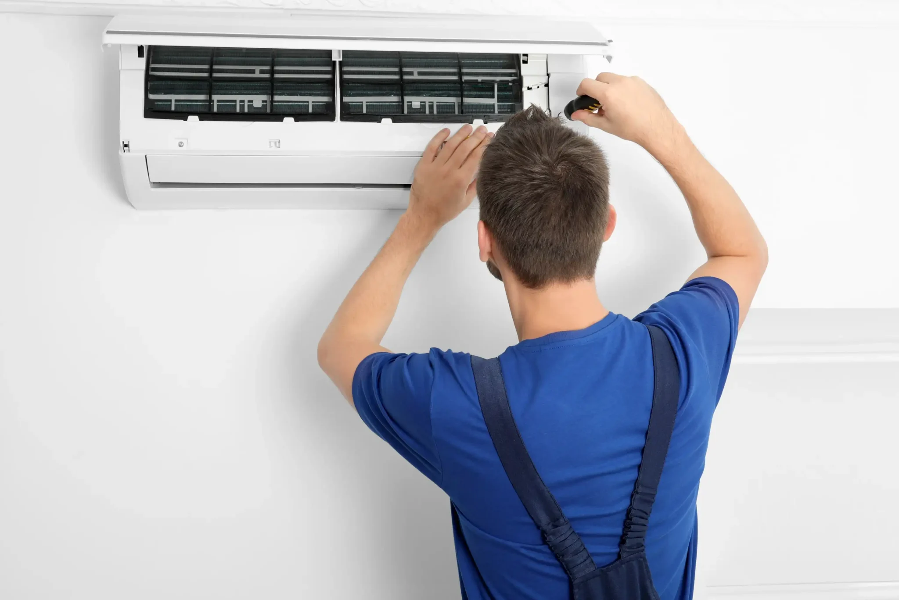

شركة صيانة مكيفات بالرياض

تعتبر شركة صيانة مكيفات بالرياض من أهم الخدمات التي يحتاجها كل منزل ومكتب في الرياض، خاصة مع ارتفاع درجات الحرارة في الصيف. إذا كنت تبحث عن أفضل فريق لصيانة مكيفاتك بأعلى جودة وأسرع وقت، فلا داعي للقلق بعد الآن. شركة نقل الرياض توفر لك حلولًا متكاملة تضمن لك راحة تامة وأداء مثالي لجهاز التكييف. يمكنك الاعتماد على شركة نقل الرياض وهي أفضل شركة صيانة مكيفات بالرياض، تقدم الشركة خدمات متكاملة بأسعار تنافسية . تواصل معنا الآن من خلال الواتساب بالضغط هنا واحصل على أفضل العروض والخدمات المتكاملة لصيانة مكيفك!
أهمية صيانة المكيفات في الرياض
تُعتبر صيانة المكيفات من الأمور الحيوية والضرورية في مدينة الرياض نظرًا للظروف المناخية القاسية وارتفاع درجات الحرارة الشديدة التي تصل أحيانًا إلى مستويات غير محتملة. في مثل هذه الأجواء، يعتمد السكان بشكل كبير على أجهزة التكييف للحفاظ على راحة منازلهم وأماكن عملهم. ولهذا السبب، تلعب شركة صيانة مكيفات بالرياض دورًا لا غنى عنه في ضمان استمرارية عمل هذه الأجهزة بكفاءة عالية. الصيانة الدورية تساعد على الوقاية من الأعطال المفاجئة التي قد تؤدي إلى توقف المكيف عن العمل تمامًا، مما يسبب إزعاجًا كبيرًا خاصة خلال أشهر الصيف. كما أن الصيانة المنتظمة تُطيل من عمر الجهاز وتساعد في تقليل استهلاك الطاقة الكهربائية، الأمر الذي يوفر على المستخدمين مبالغ كبيرة على المدى الطويل. تعتمد شركة صيانة مكيفات بالرياض على فرق فنية مدربة وأدوات متخصصة لفحص وتنظيف وصيانة جميع أنواع المكيفات، سواء كانت مركزية أو سبليت أو شباك. هذه الخدمات لا تقتصر فقط على الإصلاح بل تشمل الكشف المبكر عن المشاكل وتقديم حلول وقائية تحمي الجهاز من التلف. بالتالي، يصبح من الضروري لأي شخص يمتلك مكيف هواء في الرياض أن يختار شركة صيانة موثوقة تحرص على تقديم خدمة مميزة. استخدام خدمات شركة صيانة مكيفات بالرياض يضمن راحة البال ويحول دون حدوث أعطال متكررة تؤثر على جودة الهواء ودرجة الحرارة داخل المنزل أو المكتب.
خدمات شركة صيانة مكيفات بالرياض
تقدم شركة صيانة مكيفات بالرياض خدمات متعددة ومتخصصة تشمل:
- الفحص الشامل والدقيق: استخدام أحدث الأجهزة لتشخيص أعطال المكيف بسرعة ودقة، مما يوفر الوقت ويمنع تفاقم الأعطال.
- تنظيف الفلاتر بعمق: إزالة الأتربة والشوائب التي تؤثر على جودة الهواء وكفاءة التبريد.
- فحص نظام التبريد: التأكد من عدم وجود تسريبات أو نقص في مادة التبريد التي تؤثر على أداء الجهاز واستهلاك الكهرباء.
- إصلاح الأعطال الكهربائية: التعامل مع كافة الأعطال الكهربائية التي قد تصيب المكيف بشكل احترافي وسريع.
- استبدال قطع الغيار: توفير قطع غيار أصلية لضمان استمرار عمل المكيف بكفاءة وبدون مشاكل.
- عقود صيانة دورية: تقديم باقات صيانة منتظمة للحفاظ على أداء المكيف طوال العام مع ضمان جودة الخدمة.
- خدمات متكاملة للمنازل والمكاتب: توفير حلول صيانة تناسب جميع أنواع المكيفات في البيوت والمكاتب والمؤسسات.
بفضل هذه الخدمات، تتميز شركة صيانة مكيفات بالرياض (شركة نقل الرياض) بالكفاءة والموثوقية، مما يجعلها الخيار الأمثل للحفاظ على تكييف الهواء في أفضل حالاته.
كيف تختار أفضل شركة صيانة مكيفات بالرياض؟
اختيار شركة صيانة مكيفات بالرياض المناسبة يمثل خطوة مهمة لضمان بقاء جهاز التكييف يعمل بكفاءة وجودة عالية. مع كثرة الشركات المتخصصة في صيانة المكيفات بالرياض، من الضروري أن تعرف المعايير التي تساعدك في اختيار الشركة الأمثل.
- أولاً: يجب أن تهتم بخبرة الشركة في مجال صيانة المكيفات، فكلما كانت سنوات الخبرة أكثر، زادت ثقة العملاء في جودة الخدمات المقدمة. فشركة ذات خبرة واسعة مثل شركة نقل الرياض تمتلك القدرة على التعامل مع أعطال متنوعة وتقديم حلول سريعة وفعالة.
- ثانيًا: من المهم قراءة تقييمات وآراء العملاء السابقين عن شركة صيانة مكيفات بالرياض، حيث تعكس هذه الآراء مدى احترافية الشركة والتزامها بالمواعيد والجودة.
- ثالثًا: تحقق من توفر قطع الغيار الأصلية لدى الشركة، لأن استخدام قطع غير أصلية قد يؤدي إلى أعطال متكررة وتقليل عمر المكيف.
- رابعًا: تأكد من سرعة الاستجابة وجودة خدمة العملاء، فشركة صيانة مكيفات بالرياض يجب أن توفر دعمًا سريعًا في حالات الطوارئ خاصة خلال فصل الصيف.
- خامسًا: يُفضل أن تقدم الشركة ضمانًا على خدماتها، مما يمنحك راحة بال ويؤكد على جودة الصيانة. عند الالتزام بهذه المعايير، ستتمكن من اختيار أفضل شركة صيانة مكيفات بالرياض التي تلبي احتياجاتك وتوفر لك خدمات ممتازة.
نصائح للحفاظ على المكيف وتجنب الأعطال
للحفاظ على جهاز التكييف في أفضل حالة وتجنب الأعطال المفاجئة، من الضروري اتباع بعض النصائح المهمة التي تساعد في إطالة عمر المكيف وتحسين أدائه. أول خطوة هي الاعتماد على شركة صيانة مكيفات بالرياض لإجراء فحوصات دورية منتظمة تضمن اكتشاف أي مشكلة في بداياتها قبل أن تتفاقم. من المهم تنظيف فلاتر المكيف بانتظام، حيث تؤدي الفلاتر المتسخة إلى تقليل تدفق الهواء، مما يضغط على الجهاز ويؤدي إلى أعطال متكررة. بالإضافة إلى ذلك، يُنصح بفحص وتنظيف وحدات التكييف الخارجية والداخلية، لأن تراكم الأوساخ والأتربة يمكن أن يؤثر سلبًا على كفاءة التبريد. ينصح كذلك بفحص مستوى مادة التبريد (الفريون) والتأكد من عدم وجود تسرب، وهو أمر تقوم به شركة صيانة مكيفات بالرياض عند الصيانة الدورية. كما يُفضل عدم تشغيل المكيف لفترات طويلة دون انقطاع، وإعطاؤه بعض الوقت للراحة، لتجنب إجهاد الجهاز. كذلك، ضبط درجة الحرارة بشكل معتدل يساعد في تقليل استهلاك الطاقة ويمنع تعرض المكيف للإجهاد. عند سماع أي أصوات غير معتادة أو ملاحظة تغير في أداء التكييف، يجب الاتصال فورًا بـ شركة صيانة مكيفات بالرياض لتفادي تلف أكبر. باتباع هذه النصائح والاعتماد على صيانة منتظمة، ستضمن تشغيل مكيفك بكفاءة عالية لفترة طويلة دون الحاجة إلى إصلاحات مكلفة.
العلاقة بين صيانة المكيفات وخدمة نقل الأثاث بالرياض
عندما تخطط لنقل أثاث منزلك أو مكتبك في مدينة الرياض، هناك عوامل عديدة يجب الانتباه لها لضمان سلامة جميع الأجهزة والمقتنيات، ومن بينها أجهزة التكييف التي تعتبر من الأجهزة الحساسة والهامة في كل منزل. لذا، فإن التنسيق مع شركة صيانة مكيفات بالرياض قبل وبعد عملية النقل يُعد خطوة ذكية وضرورية. أثناء نقل الأثاث، قد يتعرض المكيف إلى صدمات أو حركة غير منتظمة قد تؤثر على أدائه أو تسبب أعطالًا غير متوقعة. لذلك، تلعب شركة صيانة مكيفات بالرياض دورًا مهمًا في فحص جهاز التكييف قبل النقل للتأكد من عدم وجود مشاكل، بالإضافة إلى ضبط الإعدادات وفصل المكيف بطريقة صحيحة تحميه من التلف أثناء النقل. علاوة على ذلك، بعض شركات نقل الأثاث في الرياض مثل شركة نقل الرياض تقدم خدمات نقل متخصصة تشمل التعامل مع الأجهزة الكهربائية والأثاث بحذر عالي، مما يقلل من فرص تعرض المكيفات لأي ضرر. بعد الانتهاء من النقل، تقوم شركة صيانة مكيفات بالرياض بعمل فحص شامل للتأكد من أن الجهاز يعمل بكفاءة بعد النقل، مع إجراء أي صيانة ضرورية إذا لزم الأمر. بهذه الطريقة، يتم ضمان الحفاظ على راحة العميل وعدم التعرض لأي مشاكل أو توقف في التكييف خلال فترة الانتقال. إن الجمع بين خدمات شركة صيانة مكيفات بالرياض وخدمات نقل الاثاث باحترافية يعزز من تجربة النقل ويضمن راحة بال تامة، خاصة في ظل درجات الحرارة العالية التي تتطلب من المكيف العمل بكفاءة عالية.
الأدوات التي تستخدمها شركة صيانة مكيفات بالرياض
تعتمد شركة صيانة مكيفات بالرياض على مجموعة متقدمة من الأدوات لضمان تقديم خدمات صيانة دقيقة وفعالة، منها:
- جهاز قياس ضغط نظام التبريد: لفحص ضغط الفريون داخل الأنابيب والتأكد من سلامة نظام التبريد.
- أجهزة كشف تسرب الغاز: للكشف عن أي تسريبات قد تؤثر على كفاءة المكيف وتسبب أضرارًا.
- معدات تنظيف الفلاتر والوحدات: أدوات متخصصة لتنظيف الفلاتر ووحدات التكييف الداخلية والخارجية من الأتربة والشوائب.
- أدوات فحص الدوائر الكهربائية: لضمان سلامة المكونات الكهربائية ومنع الأعطال المفاجئة.
- معدات شحن الفريون: لإعادة تعبئة مادة التبريد عند الحاجة للحفاظ على كفاءة التكييف.
- معدات السلامة: التي تحمي الفنيين أثناء عمليات الصيانة لضمان سير العمل بأمان وكفاءة.
توظف شركة صيانة مكيفات بالرياض هذه الأدوات الحديثة لتقديم خدمة عالية الجودة، تضمن استمرار عمل المكيف بكفاءة وفعالية.
كيف توفر صيانة المكيفات في الرياض التكاليف على المدى الطويل؟
يعتبر الاهتمام بصيانة المكيفات بشكل دوري من أفضل الاستثمارات التي يمكن أن يقوم بها أي شخص يمتلك جهاز تكييف في مدينة الرياض، حيث تساعد الصيانة المنتظمة على تقليل التكاليف التي قد تتكبدها لاحقًا بسبب الأعطال الكبيرة أو استهلاك الطاقة العالي. توفر شركة صيانة مكيفات بالرياض خدمات فحص وتنظيف مستمرة تساعد على الحفاظ على كفاءة عمل المكيف، مما يؤدي إلى تقليل استهلاك الكهرباء وبالتالي تخفيض فواتير الطاقة الشهرية. كما تساهم الصيانة الدورية في اكتشاف الأعطال الصغيرة وإصلاحها قبل أن تتحول إلى مشاكل كبيرة تتطلب استبدال قطع غيار مكلفة أو حتى استبدال الجهاز بالكامل. توفر خدمات شركة صيانة مكيفات بالرياض كذلك ضمانًا على الصيانة، مما يمنح العملاء راحة البال ويجنبهم التكاليف الإضافية المرتبطة بالإصلاحات الطارئة. بالإضافة إلى ذلك، تعمل الشركات المتخصصة على استخدام قطع غيار أصلية وعالية الجودة، مما يطيل من عمر المكيف ويقلل من الحاجة إلى صيانة متكررة. في المجمل، يعتبر الاعتماد على خدمات شركة صيانة مكيفات بالرياض خيارًا اقتصاديًا ذكيًا يضمن الحفاظ على استثمارك في جهاز التكييف ويجنبك النفقات غير المتوقعة على المدى الطويل.
كيف تضمن كفاءة مكيفك مع شركة صيانة مكيفات بالرياض؟
الحفاظ على كفاءة المكيف يتطلب الاهتمام بالصيانة الدورية التي توفرها شركة صيانة مكيفات بالرياض بشكل احترافي ومنتظم. تعتمد هذه الشركات على فحوصات شاملة تتضمن تنظيف الفلاتر، التحقق من مستوى الفريون، وفحص الأنظمة الكهربائية، مما يساعد على تحسين أداء المكيف وتجنب الأعطال المفاجئة. كذلك، تساهم خدمات الصيانة المنتظمة التي تقدمها شركة صيانة مكيفات بالرياض في تقليل استهلاك الطاقة، حيث يعمل المكيف بكفاءة عالية دون إجهاد. من أهم مميزات الاعتماد على شركة صيانة محترفة هو توفير الوقت والجهد، إذ توفر الشركة فنيين متخصصين لديهم الخبرة الكافية للتعامل مع جميع أنواع الأعطال والموديلات الحديثة. بالإضافة إلى ذلك، تلتزم شركات الصيانة بتقديم ضمان على أعمالها، مما يمنح العميل الثقة في جودة الخدمة ويقلل من القلق بشأن المشكلات المستقبلية. باختيار شركة صيانة مكيفات بالرياض الموثوقة، تضمن تشغيل مكيفك بأعلى كفاءة وأطول عمر ممكن.
فوائد الصيانة الوقائية مع شركة صيانة مكيفات بالرياض
تُعتبر الصيانة الوقائية من أهم الخدمات التي تقدمها شركة صيانة مكيفات بالرياض لضمان عمل أجهزة التكييف بأفضل حال طوال السنة. هذه الصيانة تتضمن فحصًا شاملاً للمكيفات قبل موسم الصيف، وتنظيفًا دقيقًا للفلاتر والأنابيب، بالإضافة إلى التحقق من مستويات الفريون ونظام التبريد. تساعد الصيانة الوقائية على اكتشاف المشاكل قبل أن تتفاقم، ما يوفر على العملاء الكثير من تكاليف الإصلاح الطارئ ويقلل من احتمالية تعطل المكيف في أوقات حرجة. كما تضمن شركة صيانة مكيفات بالرياض أن يعمل المكيف بأعلى كفاءة، مما يقلل من استهلاك الكهرباء ويحافظ على راحة المستخدمين. ومن الفوائد الأخرى للصيانة الوقائية هو إطالة عمر المكيف وتأخير الحاجة إلى استبداله، مما يجعلها استثمارًا ذكيًا لكل من يريد الحفاظ على أجهزته وأمواله. الاعتماد على شركة صيانة مكيفات بالرياض ذات الخبرة في مجال الصيانة الوقائية يضمن لك خدمة متواصلة ومريحة دون انقطاع التبريد.
في الختام، تعتبر شركة صيانة مكيفات بالرياض الخيار الأمثل للحفاظ على كفاءة مكيفك وضمان أدائه المثالي طوال العام. من خلال الاعتماد على شركة محترفة مثل شركة نقل الرياض، يمكنك تجنب الأعطال المكلفة وتحسين استهلاك الطاقة، مما يوفر عليك الكثير من التكاليف. إذا كنت تبحث عن خدمة موثوقة وسريعة، لا تتردد في التواصل مع شركة نقل الرياض التي تقدم أفضل خدمات الصيانة في الرياض. اختيارك لشركة صيانة محترفة يضمن لك راحة بال وبيئة مريحة في منزلك أو مكتبك طوال السنة، للتواصل من خلال الواتساب اضغط هنا.